The Wedding Library
Plan it. Find it. Fund it. Remember it. One platform for the whole wedding — the couple's planning, the guests' invitations and photos, the people at the door, and the vendors who make the day happen.
Live: weddings.godjitech.com · App Store — a Godji Tech product. Android coming to Google Play.
The problem
A wedding is planned across a dozen tools that don't talk to each other: a spreadsheet for the guest list, WhatsApp for invitations, a separate site for the registry, a shared album nobody finds, and vendors juggled over email. The couple ends up as the integration layer.
And the weddings this was built for aren't one event. A Southern African wedding is often a traditional ceremony and a white wedding, with lobola or roora negotiations, family outfits ordered in bulk, households invited as one, and guests who arrive with a phone rather than a printed card. The goal was one place that handles all of it, in the couple's own words — and that guests can use without creating an account.
What I built
Guests & RSVPs
Households as one entry, bulk import with duplicate detection, per-guest invitation links, and name matching that finds "Admire And Wife Musonza" from either name — with a "which one is yours?" chooser when several match.
Designed invitations
Five templates, the couple's own first-person wording, a drawn signature from each partner's own account, and a live preview of the exact email that gets sent — in light and dark mode.
Shared album
Guests join with a wedding code, shoot or upload photos and short videos, and everything is grouped by the run of the day. Photos are resized on the phone before they touch venue wifi.
Live on the day
The programme highlights what's on now and what's next in the venue's time zone, with a dark "day board" for the top table and local reminders that work without signal.
Door & check-in
Invite-only weddings get a door team with personal codes, QR entry passes for every guest, scan-or-search check-in, and a live count for the couple.
Traditions, budget & vendors
Lobola and outfit planning in each tradition's own vocabulary, a budget, a registry with pledges, and a vendor marketplace with enquiries, itemised quotes, bookings and payment schedules.
Screens
For the couple
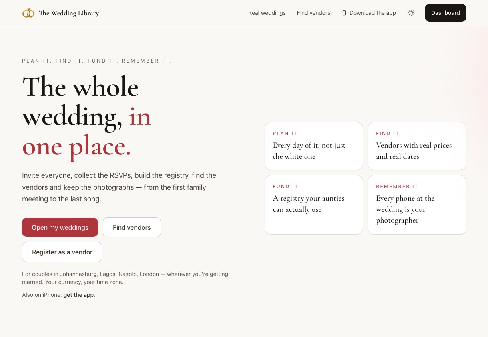
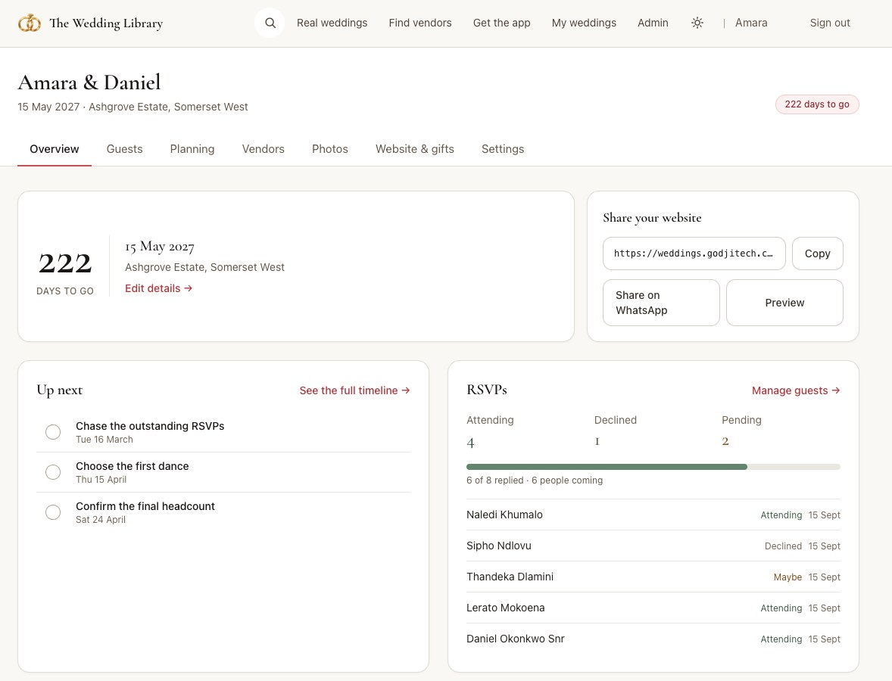
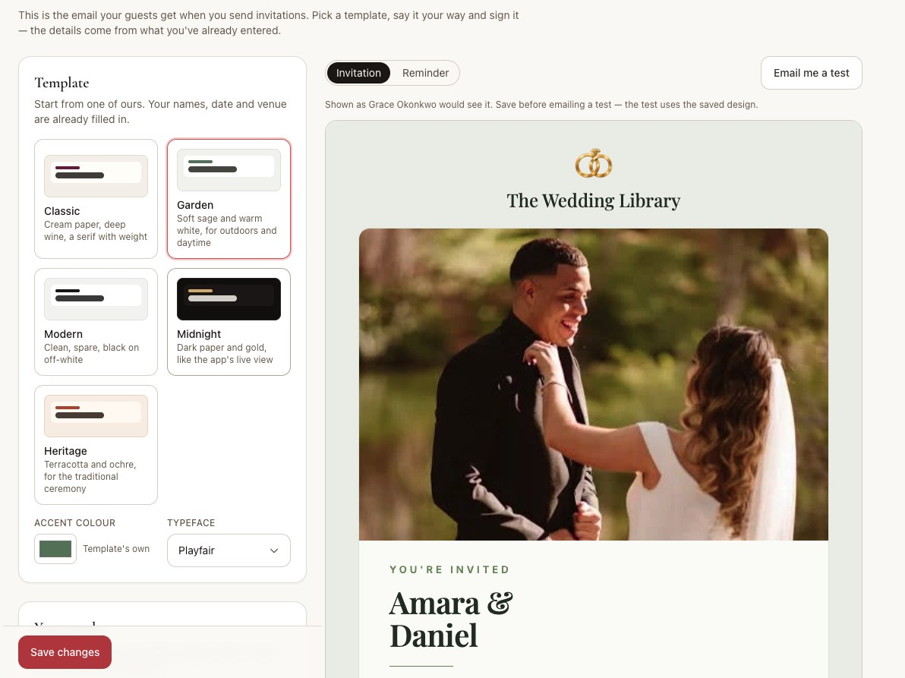
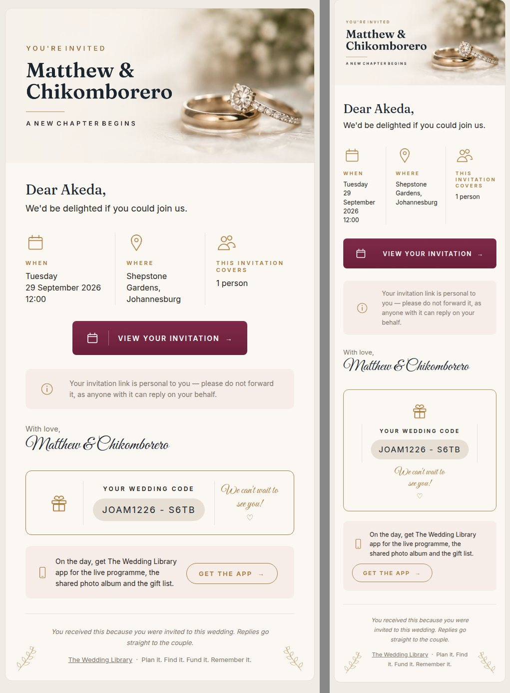
For the guests
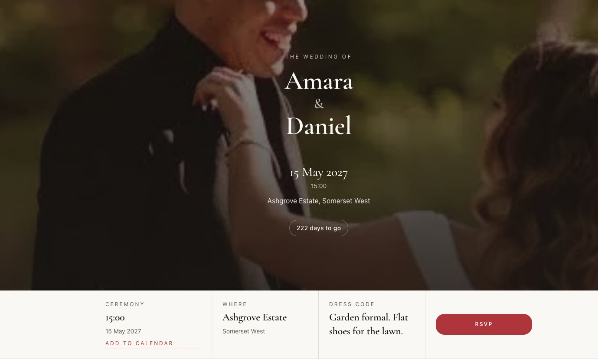
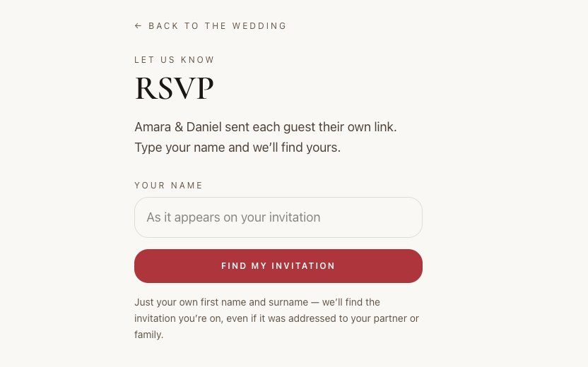
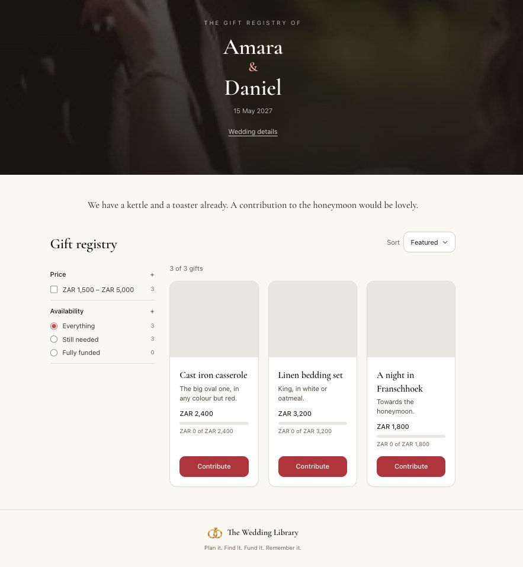
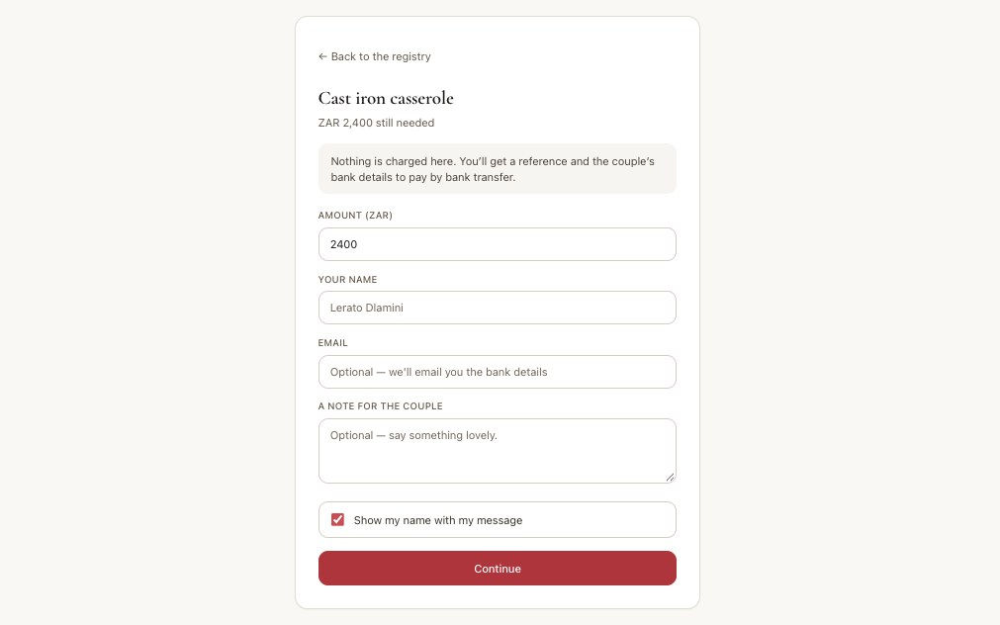
On the day
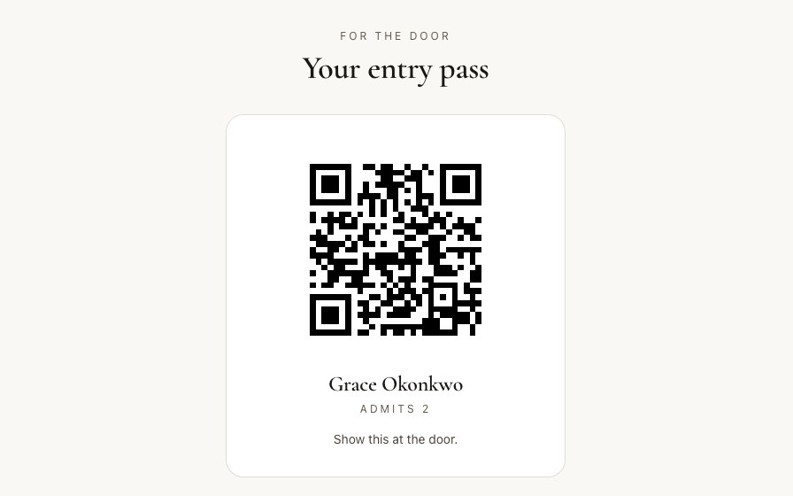
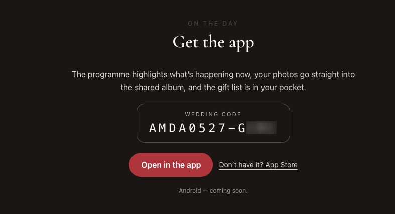
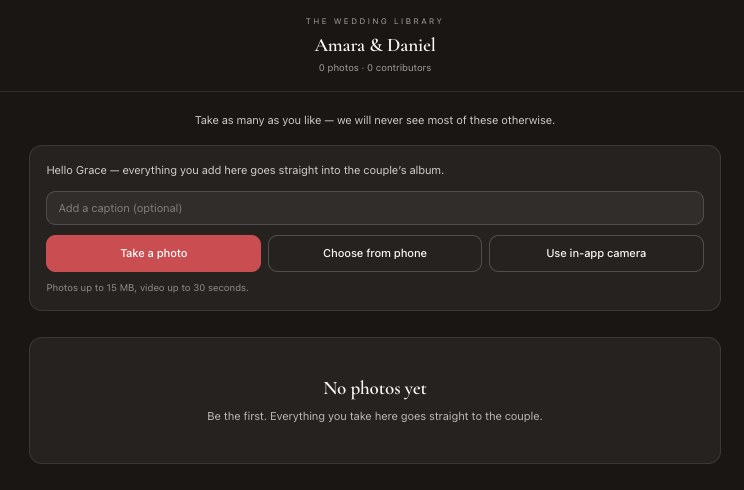
Architecture
Next.js 16 · App Router weddings.godjitech.com on Netlify
├── server actions every write, with plain-English errors
├── couple workspace guests, seating, door, budget, traditions…
├── guest pages /i/<token> invitation + RSVP, /w/<slug> site
├── vendor console profile, packages, enquiries, quotes, bookings
└── next/og per-couple invitation banners as PNG
Expo · React Native one codebase → iOS (live) + Android
├── expo-router couple · guest · door · vendor stacks
├── expo-camera / video album capture, QR entry scanning
├── expo-notifications on-the-day reminders, push
└── EAS Build + Update store builds and over-the-air fixes
Supabase Postgres · auth · row-level security · storage
├── 50+ migrations roles, permissions, security-definer RPCs
├── Google + Apple sign-in, branded auth emails over custom SMTP
└── guest & door access bearer tokens, never full accounts
Guests and door staff never get accounts. A guest's invitation link and a door member's code are bearer tokens checked inside security-definer functions, so a wedding with three hundred guests doesn't need three hundred sign-ups — and a leaked link can only ever reach its own wedding.
The harder parts
Permissions people can see
Couples invite planners and family with different powers — co-owner, editor with switches for money, vendors and announcements, or view-only. The database enforced all of it from the start; the work was making the screens agree, so a helper sees a disabled button with a reason instead of clicking and watching nothing happen.
Email is not a browser
The invitation had to look like a printed card in Apple Mail, Gmail on the web and Gmail's dark mode on a phone — which ignores media queries, drops background images and recolours text. The answer was tables, fluid blocks that stack without CSS, and generating the one piece of text over a photo as an image on the server.
Time is the venue's time
"What's on now" is computed in the wedding's time zone, not the phone's, so the guest who flew in and the cousin down the road see the same programme. Dates render with a fixed locale on the server and in the browser to avoid hydration mismatches.
Shipping two platforms from one backend
Website and app share every rule through the database rather than duplicating it in two codebases. The app ships JS-only fixes over the air; a release script checks native config and refuses an OTA that would need a new binary.